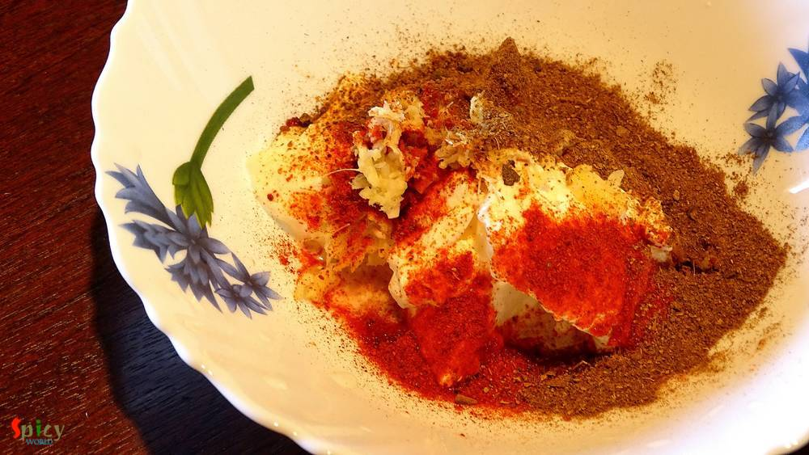
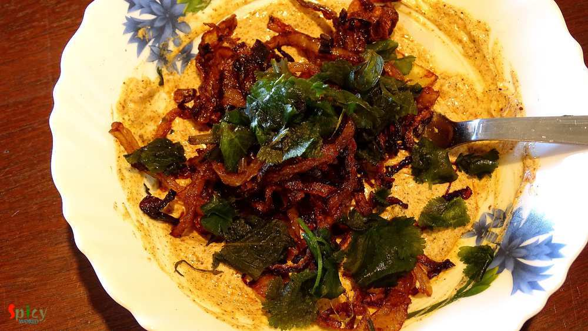
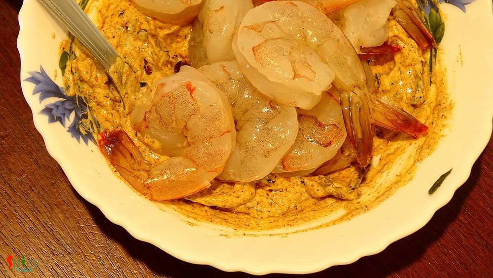
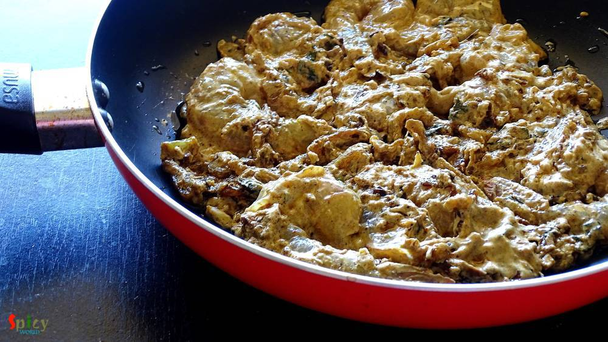
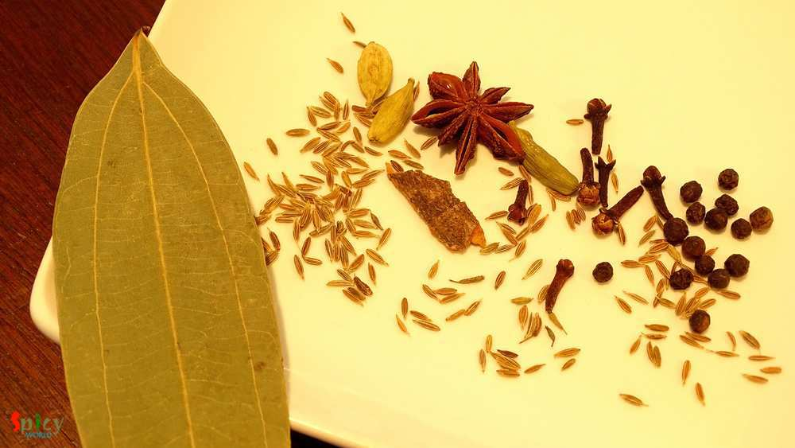
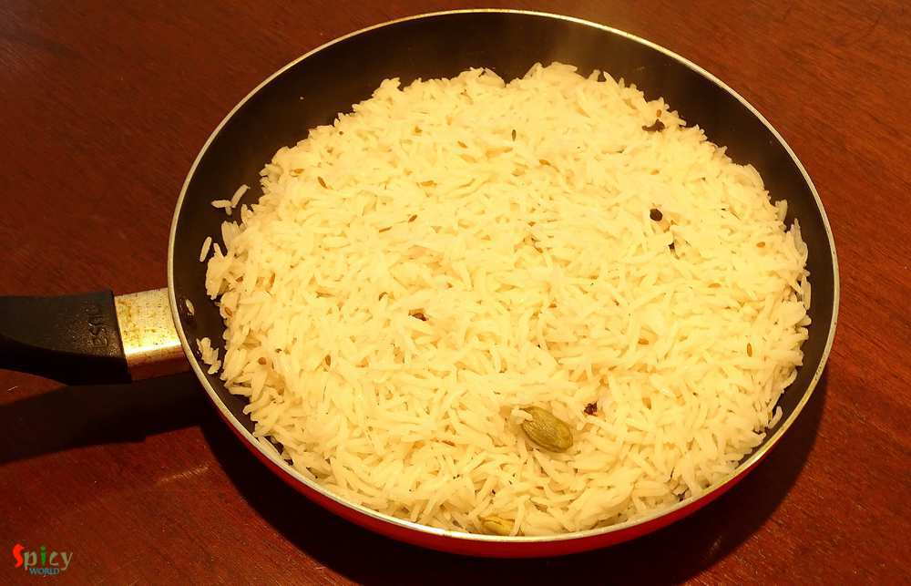
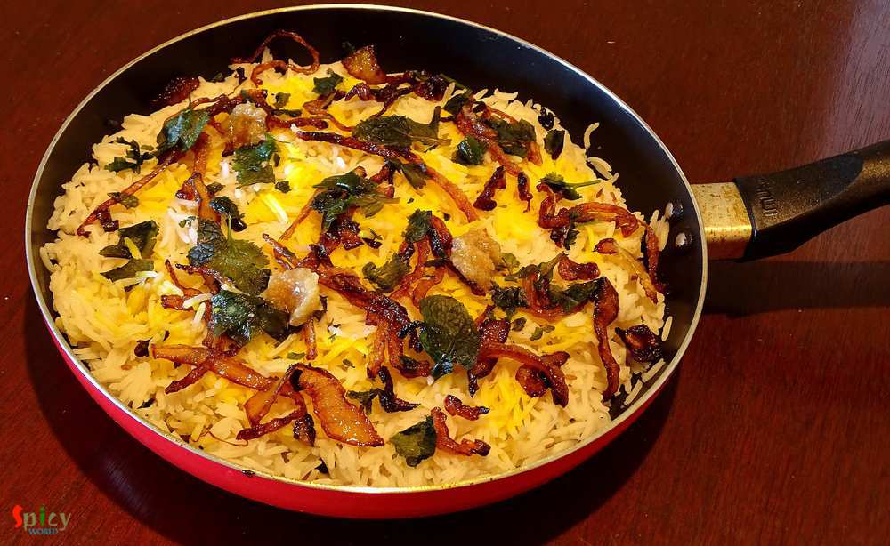
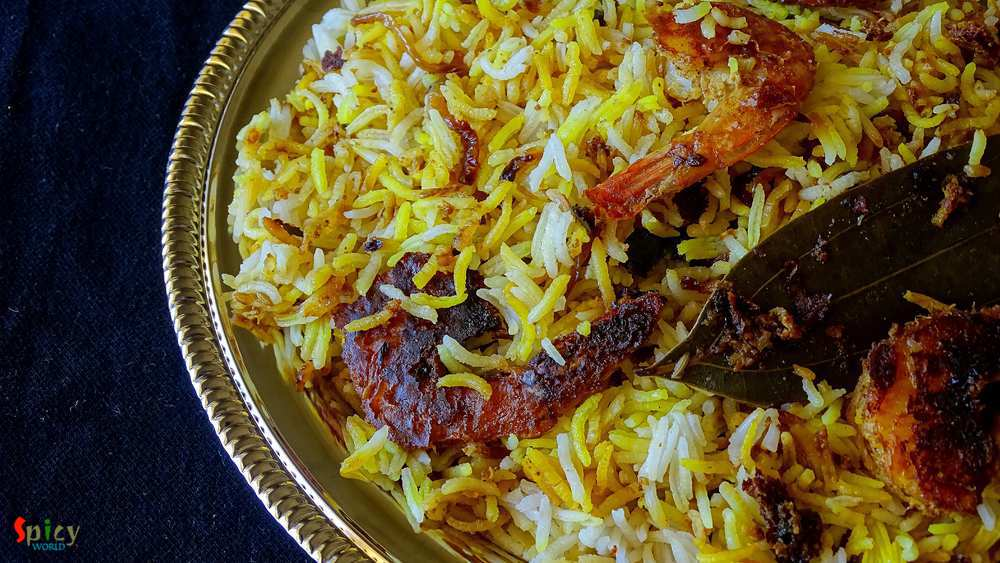

Simple and Easy Recipes
Prawn Biriyani / Shrimp Biriyani / Chingrir Pulao
© 2016 Spicy World, Published on: Feb 24, 2016
This is my first try on 'Prawn Biriyani' and I pretty much nailed it. I have made this biriyani in classic way, everything is cooked by 'dum' and also in sealed vessel. The taste and aroma was phenomenal. The flavour of fresh shrimps and long grain basmati rice gave this dish a unique taste, very much different from chicken / mutton biriyani. We both enjoyed it with chicken curry. You have to try this biriyani in your kitchen and let me know how it turns out for you.

Ingredients
- 1 cup of basmati rice.
- 10 pieces of jumbo prawns.
- Whole spices (3 green cardamom, 5 - 6 cloves, 1 Teaspoon of cumin seeds, 1 bay leaf, 1 star anise, 1 cinnamon stick, 5 - 6 black pepper corns).
- Salt.
- A handful of chopped mint leaves and coriander leaves.
- 1 cup of brown onion (homemade).
- 3 Tablespoons of curd / yogurt.
- 1 Teaspoon of ginger and garlic paste.
- 1 Teaspoon of red chilli powder.
- 2 Tablespoons of biriyani masala.
- 3 Tablespoons of oil.
- 1 Teaspoon of ghee.
- 1 Teaspoon of kewra water.
- 2 Tablespoons of saffron soaked milk.

Steps
Put the curd, ginger + garlic paste, red chilli powder, biriyani masala and some salt in a mixing bowl.
Mix well with a spoon.

Then add some chopped mint + coriander leaves, half cup of brown onion and 3 Tablespoons of oil.
If possible try to use that oil in which you fried the onion.
Mix well.

Lastly add washed, deveined prawns. Mix well and keep it in fridge for 2 hours.

After the marination, take out the prawns from the fridge.
Spread a Teaspoon of oil in a vessel, in which you will make biriyani.
Then place the marinated prawns. Keep it aside.

Boil 2 - 3 cups of water in a saucepan.
Add all the whole spices and 2 Tablespoons of salt.

Add the washed basmati rice into the boiling water.
Cook the rice till become 85% soft.
Then immediately drain all the water and spread the half cooked rice over the marinared prawns.

Now very quickly spread saffron soaked milk, remaining brown onion, chopped mint + coriander leaves, kewra water and a Teaspoon of ghee.

Cover the pan with a tight lid and put some weight over it.
First place the vessel on high heat for 5 to 6 minutes. Then lower the heat and cook for another 20 minutes.
Let it rest for 10 minutes and then serve hot.

Your prawn biriyani is ready ...
Enjoy this hot with some raita or curry ...
")